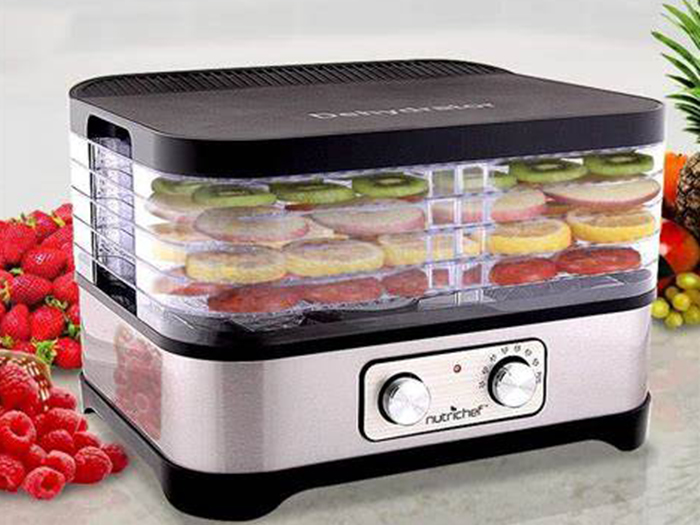

SEO: What it can do for your business
The practice of drying foods like vegetables and fruits after harvest and animal proteins has been in effect since antiquity. But as far as technology goes? Yup, she’s going to dig your style of doing it the “tech-savvy” and the “convenient way” and that too, so “easily.” She may want to buy one too as all that she has to do is operate one button. So if you are thinking of buying her a gift, buy the dehydrator that she may appreciate.
Why have we been dehydrating food since ever?
To preserve food naturally and much longer. What makes the food go bad is the moisture in it. The dehydrator simply removes the moisture to help the food last much longer and beat the due expiry date, manifolds. The dehydrator uses the combination of heat and airflow to get rid of the unwanted moisture that spoils the food.
The food drying method is a food preservation method as it stops the growth of yeast, bacteria, and mold with water removal. The dried food varieties as nuts, seeds, fruits last up to a year and some items go beyond and last up to 2 years.
So, how does the dehydrator work?
The dehydrators use the scientifically tested technique of heat circulation that permits the heat to travel through each of the trays. This process helps to get rid of the excess moisture systematically with the aid of heating element, air vents, fan, and food trays.
The trio- (the heating element along with the fan and the vents) work collaboratively to remove the moisture and circulate the air. With the help of low temperature, the moisture is released from the food into the dehydrator.
The fan assists the heating element to dry up the food further and keep the air smell free. Which also means that you can dry a variety of items at a go without conflict in their smell or flavor. But, as far as the green onions or pungent smelling items go, avoid mixing them.
A Healthy Choice…
Since the dehydrator dries up the food at low temperature, it keeps the enzymes in the food undamaged and prevents the growth of microorganisms. So you needn’t add any preservatives additionally. Dehydrated vegetables and fruits do not require additional salt or sugar preservatives. Plus it gives the complete fiber content and minerals as the whole fruit does.
The canned varieties come packed with preservatives and many times they contain invisible bacteria. But with the dried food, you can easily tell if it goes bad as the mold shows up.
Also, the food above 118° F is considered cooked as it loses nutritional values. That is why the dehydrated food varieties are dried up at lower temperature between 105° F to 115° F or 41° C to 46° C which help retain 97% of nutritional value in the food item.
Convenient and Easy to Operate
The dehydrating process is flexible, foolproof and efficient. With just a click of a button you may dry a single fruit or a basketful, it is your option. The dehydrators come with trays, so you can dry the desired quantity. What’s more? There is the option of sliding slots in trays of food. So you may even dry a variety of things in a tray.
Most dehydrators come with a combination of different variety of trays that suit the dry and the moister varieties. You can put the drier varieties as whole fruit and vegetables directly onto the mesh trays at the top. For the wetter varieties as the batter of bread or crackers, there is usually an option of Teflex-sheet covered mesh trays, which may be kept at the bottom. And what is the great part that you simply cannot mess-up? You simply cannot over-dry as the temperatures are so low!
But you would have to be aware of the weather when keeping your dried food outside to cool off. Make sure it is not a rainy or a humid day as that will simply rehydrate your dehydrated produce and undo the process. And you would have to do it all over again!
Also since the process takes from 4-5 hours, you can switch on the dehydrator and get about other chores at home on the weekends.
Dehydrators help maintain your Wallet
The dehydrators allow you to stock up large quantities of preserves which work out much cheaper than the marketed price. The dehydrators allow you to enjoy the off-season produce bought at the right price just after the harvest. And the machines themselves are not shockingly expensive. The dehydrators are great for large families, camping or for folks who have healthy appetites.
Most of the dehydrators are expandable and you may buy more trays and layers as per your need.
What all can you preserve and do with the Dehydrator?
Well, most people use them to dehydrate vegetables, fruits, nuts, herbs, and seeds. You have the option of eating them dried or use them in pizza sauce to cobblers. You can even use the dried vegetables in the ‘instant soup mix’ for instance. Or do as some other creative foodies do- you can enjoy the veggie mix powder with green onion powder in your scrambled eggs.
Some people even make crispy snacks like crackers, potato chips, and kale chips. You can make delicious crackers by just spreading-out a mixture of soaked nuts or sprouted grains, flax and veggies. For the sweeter assortment, the infamous chewy fruit leather or pancakes and cookies would be the choice of satisfaction.
The dehydrator machine allows you to preserve the seasonal produce in a healthy manner negating the use of preservatives. It helps retain 97% of the nutritional food value. You can keep your costs low by using homemade vegetable and seed and onion chunks which you can eat as is or powder them and rehydrate them in sauces, pasta, and other dishes. You can preserve from small to large quantities and enjoy them even during the offseason for a year or even two in some cases.
All in all, the dehydrator machine is a great bonus which helps you to save time, money and preserve health. The dehydrators make great gift items for closer and important associations.